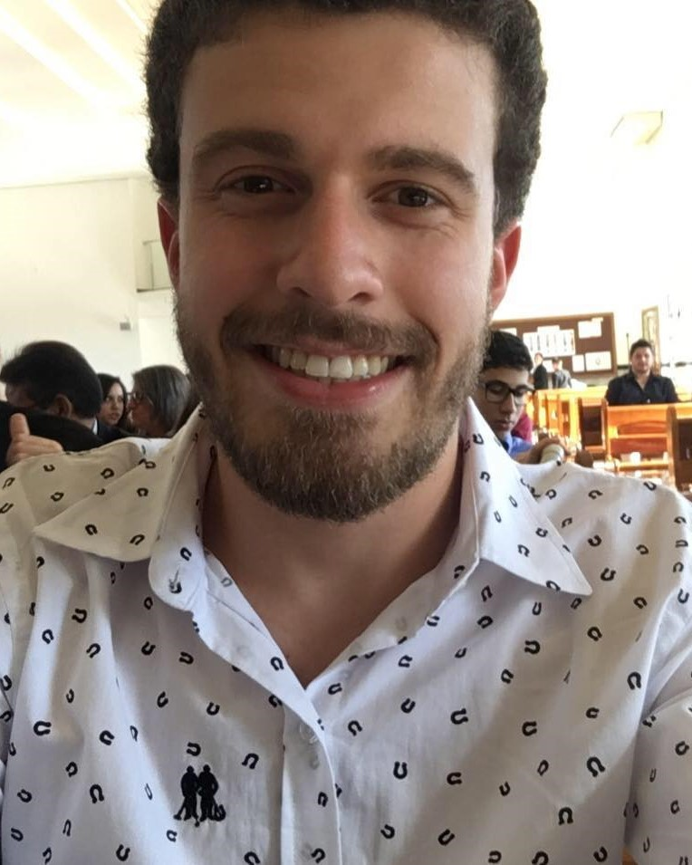
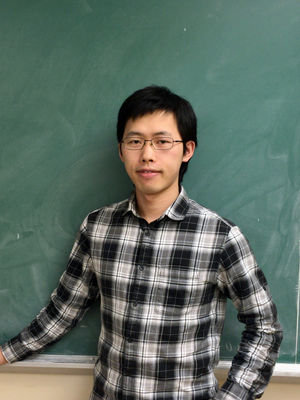
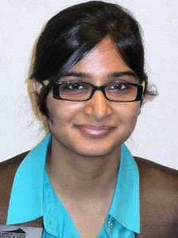
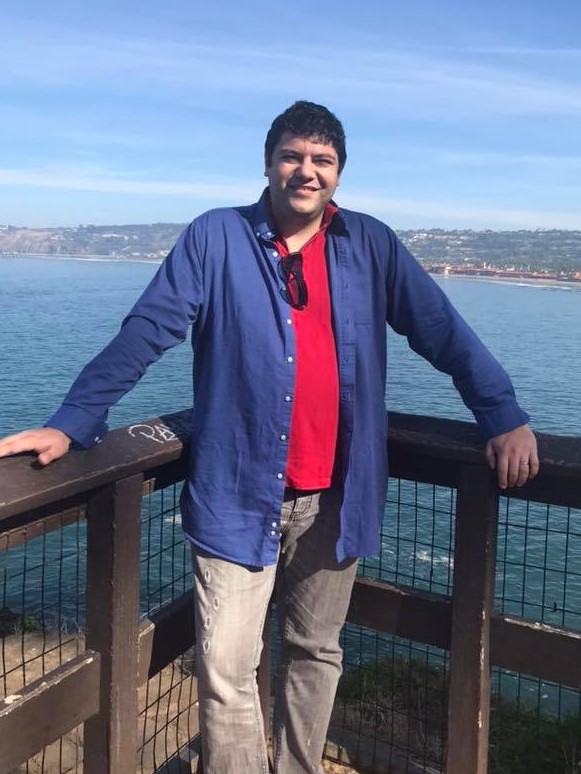

Faculty
Postdocs
Ranthony A.C. Edmonds
Pure and Applied Alegbra.
Graduate Students
Nathaniel Clause
Dynamic metric spaces and their persistent homology, formigrams, and computational algorithms and implementations regarding these topics.

Marco Antonio Contessoto
(The São Paulo State University - UNESP) Topological data analysis, in particular persistent Homology and persistent Cohomology.

Mario Gomez Flores
Curvature sets with connections to persistent homology and representable clustering functors.
Musashi Koyama
Topological data analysis and spectral sequences.
Kun Jin
Optimal transport, mobile sensing, machine learning and security & privacy.
Zhengchao Wan
Metric geometry, optimal transport and topological data analysis.

Qingsong Wang
Topological data analysis and metric geometry.
Ling Zhou
Applied algebraic topology, computational geometry and topological data analysis.
Alumni and former postdocs
Samir Chowdhury
(Now post-doctoral scholar at Stanford Univ.) Network data analysis, applied topology, machine learning
Bowen Dai
(Now PhD student at Dartmouth College.)
Alex Elchesen
(Now PhD student at Univ. of Florida.) Topological data analysis and persistent homology.
Woojin Kim
(Now assistant research Prof. at Duke University.) Topological data analysis, metric geometry and their applications to dynamical stytems.
Sunhyuk Lim
(Now post-doctoral scholar at MPI MiS, Leipzig) GH distance, Filling radius, generalized notion of curvature, heat kernel, topology of VR complexes, and interplay between them.

Kritika Singhal
(Now senior associate at Axtria Inc.) Metric geometry, computational geometry and topological data analysis.
Ying Yin
(Now quality assurance engineer at Wolfram Research.) Topological data analysis.
Osman Okutan
(Now Dean's post-doctoral scholar at Florida State Univ.) Metric geometry, Differential Topology and Geometry, Algebraic Topology, and topological data analysis
Zane Smith
(Now PhD student at Univ. of Minnesota.)
Simon Zhang
(Now PhD student at Purdue Univ.) Topological data analysis and high performance computing.
Tom Needham
(Now Assistant Prof. at Florida State Univ.) Statistical shape analysis, topological data analysis,
and mathematical signal processing

Anastasios Stefanou
(Now tenure track Assistant Prof. at Univ. of Bremen) Category theory, applied and computational topology.
Visiting Students
José Ángel Sánchez Gómez
Guilherme Vituri